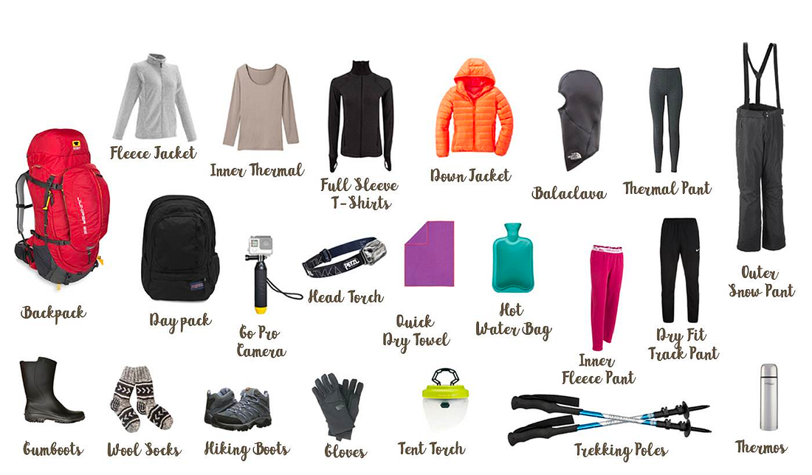

Nepal on a Budget: Backpacking Through Kathmandu, Pokhara, and the Australian Base Camp
The article provides practical advice and tips for traveling in Nepal.
If you’re thinking of visiting Nepal, there are several things you need to know to make the most out of your trip. Nepal is a destination known for its natural beauty, cultural richness, and friendly people. Whether you’re seeking adventure or a peaceful escape, Nepal has something for everyone.
This article provides a valuable firsthand account of a traveler’s experiences in Nepal. Here you can find practical advice and tips on currency exchange, transportation, and sightseeing in Kathmandu and Pokhara, as well as recommendations on where to eat and what to do. The article also highlights the friendliness and safety of the Nepalese people, which is important information for anyone considering a trip to Nepal.
When planning your trip, there are two options to consider:
Traveling with a travel agency
Planning your trip alone
Visiting Nepal with a travel agency can offer many advantages such as access to local knowledge and expertise, organized activities and transportation, and peace of mind. Especially if you are going for high-altitude hikes, a guide and a porter to carry your bags can be very helpful. On the other hand, planning a trip alone gives you more flexibility, freedom, and the opportunity to design a more personalized itinerary. I would recommend that option if your main plan is to explore Nepal’s culture and interact with locals. You save a lot and you have no one to deal with. Also, it is completely safe to make the trip to Nepal alone!
If you are going with a tourist agency, Himalayan Wonders is extremely organized that takes care of the whole trip for you. They answer fast when you email them. If you are price sensitive, they have a sister company, Adventurehero, which does the same trips but for cheaper prices — less fancy hotels and jeep rides instead of internal flights. When organizing your trip with an agency, it can also be stressful if you leave everything for the last moment so consider finalizing the booking some days in advance.
When I visited Nepal with a friend in February 2023, we went without a guide. While doing the proper research can be time-consuming, hopefully, this article saves you some time.
TASKS BEFORE VISITING
üíâHealth: Consult your doctor before going. Typically, there are suggested vaccines such as rabies, typhoid, hepatitis, and tetanus, but recommendations vary depending on each traveler. Malaria is uncommon there but also depends on the cities that you are going to. Usually, malaria cases are reported in the lower west side of Nepal e.g. Ilam. It is recommended to have international health insurance that covers you before going. I got mine from Revolut by upgrading from free to premium paying $8.99/month. If you don‚Äôt have revolut, feel free to create an account through my referral.
If you are going for a big hike i.e. Everest base camp, it is recommended to get an insurance that covers evacuation with a helicopter, because if anything happens to you while in the mountain and you are uninsured, the bill you pay will be over $2500! I did not need it, but in case you do, here is the email of the guy that I asked for information from (this advice applies to you if you are from Cyprus); giorgostheodorou4@gmail.com ; He works at Metlife, and when I shared him a trip schedule that was including everest, he drafted me a $90 insurance.
üç£ Food: If you are considering going hiking, bring with you some protein bars that will keep you during the day. It is not certain that you will find proper restaurants in the mountain while hiking. The following comes from my doctor‚Äôs advice‚Äî In general, eat only well-cooked food to minimize the risk of food poisoning. When it comes to water, bottled drinks are your go-to. Avoid using ice cubes or drinking from glasses. When brushing your teeth use bottled water and when shower with your mouth closed.
üõÇ Visa: You can do it when you arrive there at the airport (highly recommended) or apply for it in advance. You will need two recent passport-size photos and a fee. There are three options: Visa for 15 days ($30), for 30 days ($50), and for 90 days ($125).
ü•æ Hiking: In Nepal, you need a permit to go hiking called TIMS, which you can do there. You will need two recent passport-size photos for this. In general, nature in Nepal can be dangerous and you can be lost if you try to do big hikes without taking someone experienced with you.

CURRENCY & SIMCARD
Currency: Nepalese rupees. Do the conversion here before you buy something.
You can exchange your money at the airport (don’t do it before you pass the passport check), afterwards you find better rates. You also need a Sim card. You can get that also at the airport, after you arrive, the provider Ncell will have a brunch near the exit/entrance of the airport and you can get a sim card from there. I got mine with 25GB internet data and it was around 600 Rupees.
tips from 8-day trip
DAY 1: Arrival in Kathmandu
Arrived in Kathmandu at 6 pm in the evening, and met with my friend in the airport. It’s important to note that when it comes to transportation, you should avoid anyone that asks to give you a ride beside the taxis with green labels, which are the official ones.
We took a taxi (1000 rupees) from the airport to our hotel (Flock Hostel Kathmandu) and we met there our potential trip guide. We were planning to go at Pokhara and stay there for a couple of nights, do some activities and some hikes around the area. The guide was not clear about his pricings during our negotiation and he asked us to pay for his expenses as well on top of his fee, so we decided to do the trip by ourselves.
At night we went out to get some dinner. We ended up at Roadhouse cafe and we had some oven pizza. It was a central place with nice atmoshpere inside, mostly tourists were in it though. After we returned home. The city, despite the functionally chaotic driving (i.e. there are no traffic lights) and the fact that some people will try to sell you drugs, is safe; no robberies or violence. Honestly, when it comes to security and people, I felt safer than I feel in Philadelphia.
Roadhouse cafe seems to be a local chain as we found couple of them in Pokhara and Kathmandu.
DAY 2: Exploring Kathmandu
Woke up early and went to our respective embassies; the French embassy, and the consulate of Cyprus. French embassy asked from my friend to sign a document with his address in it; they did not allow us to enter. While the consulate of Cyprus was more accessible, there are no Cypriots working there. It is operated by locals, and they mostly issue tourist and student visas for Nepalese people that visit Cyprus.
Next destination, Gaia Restro & Coffee Shop for breakfast. It is a relaxed place with open space to sit outside and nice food.
Afterwards, we went to buy bus tickets for Pokhara, the place we were about to go the next day. We bought the tickets from East and West International Tours and Travels Ltd (front). Normal Bus was 1400Rupees, and the Luxury/more comfortable one was 1800Rupees — normal prices, not overcharge. Luxury bus is recommended since the road to Kathmandu is bumpy. Normally it takes around 7–8 hours the trip from Kathmandu to Pokhara. As long as you have your ticket, make sure to be at the tourist bus stop early in the morning half an hour before your bus.
Then we started walking towards the Monkey Temple. From there that we bought the tickets it was a 35-minute walk, however it was nice as we were able to stop along the way to shops and buy clothes and souvenirs.
The monkey temple is awesome because there is more trees, many monkeys, and a beautiful view of the city. The ticket to get in was 200 Rupees per person. Try not to feed the monkeys and keep your stuff on you cause they are sneaky animals! My advice; enjoy the view, take some pictures, and go continue exploring the city.
Next, on the way to Durbar Square, we found a local football court, the one that is visible from the monkey temple, where many kids were playing football. It looked like they frequently play there. Playing football with the kids was for me the best experience of the day. Football is a universal sport that makes everyone forget life problems and enjoy the game and in that moment that was the definition we lived in.
Durbar Square was a positive surprise for us. There we found many restaurants, coffee shops, and there are no cars in that area so many people walk there. Nearby you can also find the temple of Kumari Ghar.
Kumari Ghar is a historical place of worship for Hindus and Bhuddists.
Note that some people try to scam tourists and ask them to pay to go to the square. We walked through the square and headed towards Civil Mall, one of the country’s biggest malls. Besides many shops, cafes, and restaurants (including the KKFC local fried chicken chain), on the 6th floor, you can find all sorts of games such as billiards, ping pong, bowling, and basketball throws. Great place to hang with friends. Before going home, we stopped at pizza hut for dinner.
DAY 3: Traveling to Pokhara
Since the bus was leaving at 7 am, you have to be at the Tourist bus station half an hour earlier. The bus ride is bumpy but doable. The driver makes 3 stops until Pokhara. At the stops, there are restaurants and restrooms. We ate at one of the road restaurants just rice and noodles, since we are used to different diet we did not want to risk eating meat and uncooked vegetables.
We arrived at Pokhara at 5 pm, and then took a taxi (we also got the number of the driver for future rides) from the tourist bus park to our hotel, Hotel Middle Path and Spa. It is a very good hotel with a lot of facilities such as a gym, heated pool, spa, and sauna. We visited in February and a twin room was $25/night. Since we liked the hotel, we extended our accommodation there for two more nights. Then for dinner we went at Rice Garden Restaurant, a central restaurant in the main street; while it was not amazing, it was good enough. We had typical noodles and rice.
Middle Path & Spa Hotel: The best value for money hotel I have ever been!
DAY 4: Sunrise and Tibetan Refugee Camp
Our day started early. At 5.40 am, yesterday’s taxi driver picked us up from the hotel, and drove us to Sarangkot to see the sunrise. The view from there was amazing. You could see all the big hikes of the area such as Dhaulagiri (8167m), Machhapuchhare (6993m) and, Annapurna II (8,091m), and a panoramic view of Pokhara. Then the driver took us back to the hotel where we slept for a while. After, we went for breakfast at White Rabbit cafe nearby Pokhara’s lake. It was the best breakfast we had in Nepal so far! We also had a great lake view and we saw a football tournament going on next to the lake. So after our breakfast, we wanted to get closer to watch and play with them. The tournament seemed very well organized and was taken seriously by the participants. We found out that the prize for the winning team was $2000. We watched a very entertaining game with last-minute goals and a penalty shootout. Then, we borrowed a ball from the court and we played with the kids in the field. It was a beautiful experience.
Subsequently, we left to buy a return bus ticket from Pokhara to Kathmandu. We asked a local tourist agency which sold us the bus ticket for 1600 rupees. My friend was asking to rent a motorcycle for the next week. He negotiated with the guy there and he promised him a fee if he was going to help him find a good motorcycle at a good price. Finally, he got an offer to rent it for $35/day. We left satisfied from there.
If you’re planning on renting a motorcycle in Nepal, there are a few important tips to keep in mind according to my friend. First, make sure to choose a trustworthy rental company and inspect the motorcycle carefully before renting it. You can do that by negotiating with multiple rental places. When it comes to places to go, Lower Mustang is a great option with recommended stops in Kalopani, Jomson, Kagbeni, and Muktinath, each for a day. Upper Mustang is another great option with a recommended 4-day trip from Kagbeni to the Tibetan border, including a night in Ghami and the other nights in the forbidden kingdom of Lo. Remember that you will need to obtain a permit to enter these regions, which costs 500€. While it’s possible to complete this itinerary in 7 days, it’s recommended to allow for a total of 10 days to enjoy the trip at a more relaxing pace.
In the afternoon, we took a taxi for Tibetan Refugee Camp.
The Tibetan Refugee Camp in Pokhara, Nepal, is home to thousands of Tibetan refugees who fled from their homeland in Tibet due to political and religious persecution by the Chinese government. After the Chinese takeover of Tibet in 1959, the 14th Dalai Lama and many Tibetans fled to India and Nepal, where they established a number of refugee settlements, including the camp in Pokhara. The camp in Pokhara was established in the 1960s and has since then provided a home and a sense of community for Tibetan refugees. The camp is run by the Tibetan Refugee Welfare Office and provides basic facilities, such as housing, schools, medical clinics, and workshops, to its residents.
Despite the challenges Tibetan refugees face, such as limited resources and difficult living conditions, the Tibetan refugees in Pokhara have maintained their rich cultural heritage and traditions. They have established monasteries, schools, and community centers, where they can practice their religion, preserve their language, and pass their traditions down to future generations.
DAY 5: Hiking to Australian Base Camp
Early morning we packed our stuff and went for breakfast at Crown restro and lounge cafe. It did not meet our expectations. They brought us different order, then they delayed bringing us our normal one, and at the end they mistakenly charged us 600Rupees more; all of this took us an hour.
Then we called our taxi driver to drive us from our hotel to Phedi (drive costed 1500rupees) to start our hike. We passed through Dhampus and end up in Australian Base Camp. To reach Dhampus took us 1 hour. Dhampus to Australian camp distance is 4.7 kilometers / 2.9 miles. It takes 2 to 3 hours to reach the Australian camp passing through Dhampus Jungle. On Dhampus we found two travelers, Todd and Ruth. We briefly talked, and we exchanged Instagram accounts.
We reached at Australian Base Camp at 4 pm. There there are two options you can stay at 1) Angels Guest house hotel, 2) Hotel Gurans. We stayed at Hotel Gurans. Even if you book one in advance, the people there are flexible with canceling last minute. So when you go there, make sure to check and negotiate prices between the two. Both are very similar; the main differences are room availability, room view, and price.
DAY 6: Enjoying the Himalayas from our hotel
Woke up to see the sunrise at 6.30 and we had an amazing view of the Himalayas. The view was so nice, that kept us there for half of our day; we ate breakfast (omelet and pancakes), listen to music, played football, and enjoyed the view. It was the most beautiful view I have ever seen! At 2 pm we left for Kande — 1 hour to get down there. As we reached the street, we tried to call our driver. It would have taken him an hour to come so we hitchhiked and a family in a jeep drove us to Pokhara for 1000rupees.
We got some rest, and for the evening we arranged dinner with the travelers we met yesterday, Todd and Ruth. We had dinner at Soul Origin cafe and restaurant, and then dessert at French creperie; both amazing places. Todd and Ruth are an amazing duo! They are from California, they traveled in 58 countries, they love to immerse themselves in new cultures and both have great stories to tell throughout their global exploration journey; Todd is a great photographer (check his IG page), and Ruth is an amazing planner, she gave us some of the most useful traveling tips (check her article here).
Highlights from our discussion:
The most adverse trip moments are usually accompanied by strong lessons and memorable experiences.
The little moments we share with people are undervalued. Traveling helps us understand better how the world works.
Our lives in Europe and USA are much easier than we frequently think they are.
Bears in Alaska don’t bother people if their bellies are full of salmon.
When traveling, keep your valuables safe with a tracker.
DAY 7: Shopping in Pokhara
Last day in Pokhara started with a late wake-up. We had breakfast with Todd and Ruth and then went shopping at Pokhara’s main street. There are many quality products such as cashmere clothing, and brands such as NorthFace, Colombia, Patagonia that you can find much cheaper than Europe and America. On top of that negotiating is expected so you can get an even better price. After negotiating I got the following deals: a NorthFace jacket from 8500 initial price to 7000 rupees, a NorthFace sweatpants from 2500 to 1800 rupees, gloves for snow from 1000 to 900 rupees, and a cashmere sweater from 8500 to 5000 rupees.
Then we had lunch at the restaurant Fresh Elements. Very good restaruant with a lot of options and good prices; only downside is that their portions are relatively small. Our hotel Middle Path & Spa, is collaborating with that restaurant so everything we were ordering from our hotel was coming from there.
Meanwhile, my friend rented a motorcycle for $35/day from Pokhara with a plan to go to a 5-day ride starting from Pokhara to Jomsom, and ending to Upper Mustang. To ride at Upper Mustang, you need to pay for a permit $500, and have two more people with you for security. However, the pictures suggest that it is a worthwhile experience! In the evening I took the overnight bus at 7.30 pm for Kathmandu.
DAY 8: Departure from Nepal
Last day in Nepal started early in Kathmandu. I arrived at 5 am. That time everything was closed. So I took a taxi for the reception of Kathmandu Guest House hotel. There is security, resting chairs to sleep in, and good breakfast. I left my luggage there, and I walked towards Durbar square. They asked me for a ticket once more (apparently if you don’t look local they ask you to pay 150 rupees). Don’t pay for this.
Himalayan Java is the main coffee chain in Nepal. There is one in the middle of Durbar square so I went for pancakes. It seems fancier than the average coffee shop. It is the ‘Starbucks’ of Nepal.
In the evening, I went back to the Guest House hotel to pick up my luggage and called the morning taxi driver to take me to the airport (we agreed in the morning 800 rupees for the airport ride).
Overall, Nepal is among the best trips I have ever made and I’d love to revisit to see more nature and different cities. I hope you find this article useful for your trip planning to Nepal or satisfactory for your curiosity about the country and its culture.
Follow my friend’s Instagram page to see what the world looks like when you are traveling in faraway places:)
Please clap üëè on medium if you find this post helpful:)